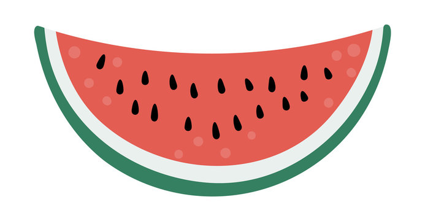

Watermelon Recipe

Description
Watermelon is a fruit, but it is also a color! You can grow it, but this will take months of laborous work. This recipe will show you how to make your own watermelon in just minutes!
Ingredients
Steps
- Add equal parts Red and Yellow to get ORANGE
- Use sorcery to create WHITE
- Mix equal parts red, white, and orange to get WATERMELON!!!